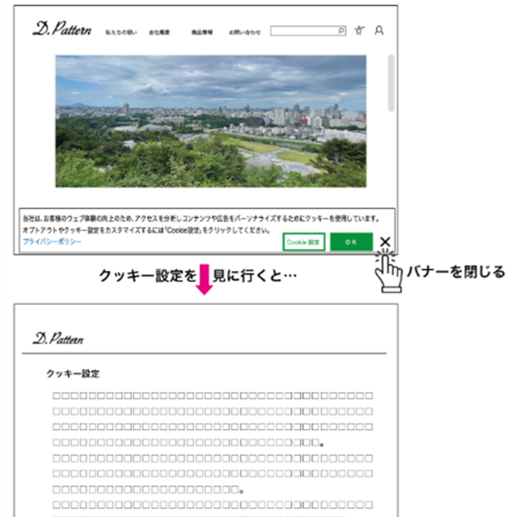
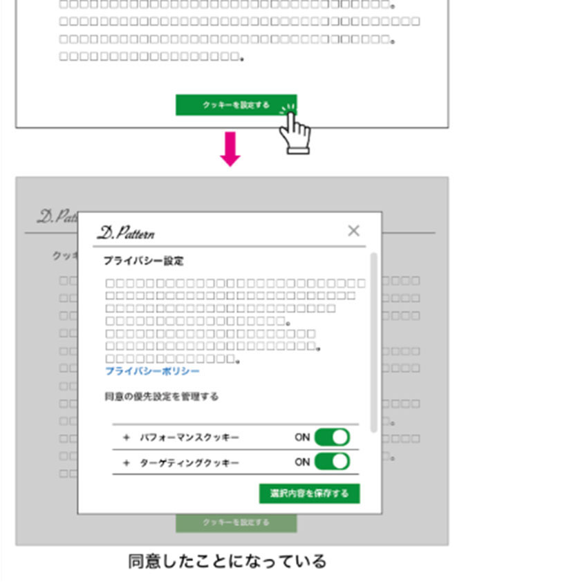

ダークパターン事例② 強制的情報開示
だまされて又は強制されて、商品の購入やサービスを利用する上で必要と考えられる範囲を超えて、個人情報を共有してしまうもの
【例】
- Ⓐクッキーバナーに、クッキー情報の取扱いに「同意しない」等の拒否のボタンがない。
- Ⓑクッキーバナーを「×」で閉じてウェブサイトの閲覧を続けた場合であっても、クッキー情報の管理画面を確認すると既に同意が設定されており、そのままにしていると、消費者はクッキー情報の取扱いに同意をしたことになっている。


拒否ボタンがなく、閉じても同意済みになるクッキーバナーです。ボタンを押して結果を確認してください。
example-news.jp/article
ニュース記事
記事本文を読む前に、画面下のバナーが表示されます。
同意・拒否・個別設定を同じ階層に置き、閉じる操作を同意として扱わない改善例です。
example-news.jp/article
Cookieの設定
目的を確認して選べます。拒否しても記事を閲覧できます。
解説
拒否の選択肢がない、または閉じる操作を同意とみなす設計では、利用者は情報提供を事実上強制されます。
改善例では、同意と拒否を同じ画面・同程度の目立ち方で提示し、目的ごとに選択できるようにします。必須でないCookieは初期状態をオフにします。